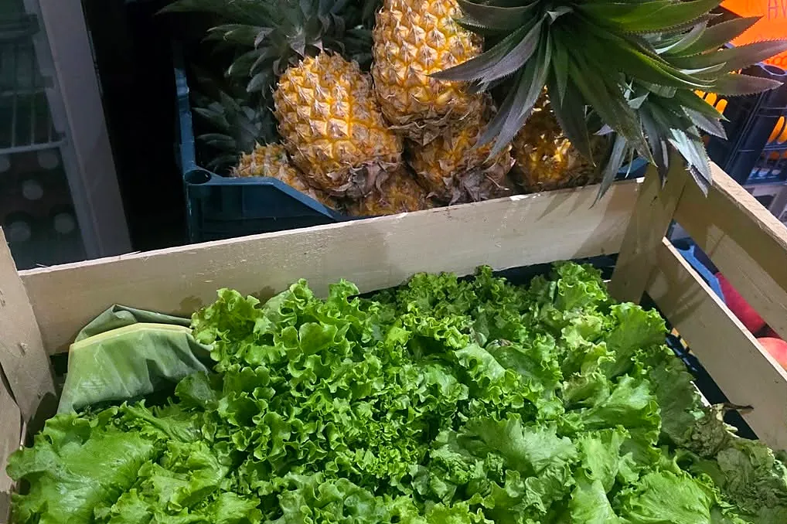
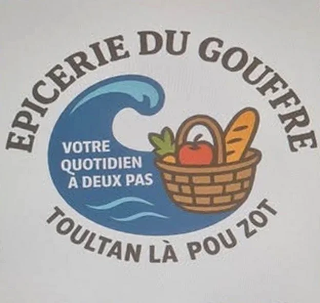
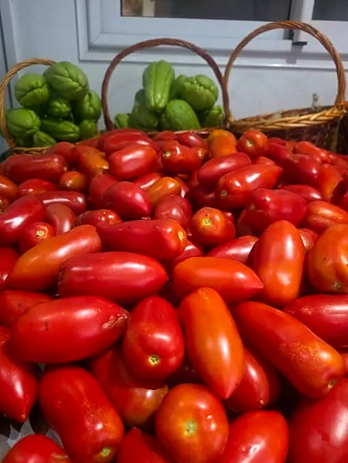
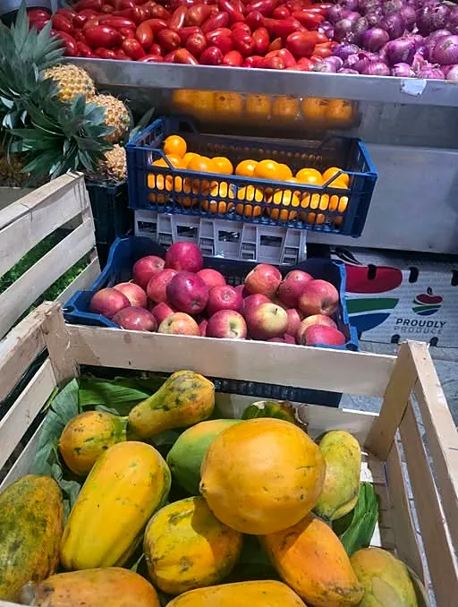
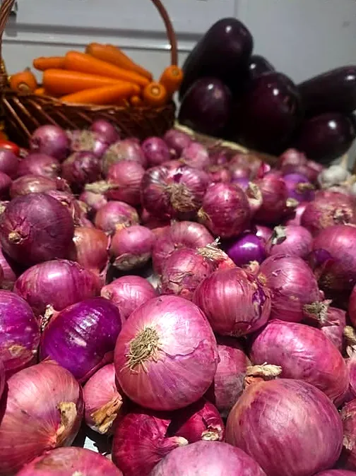
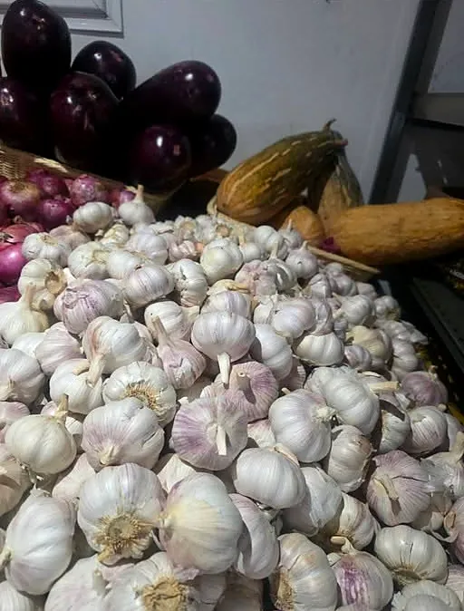
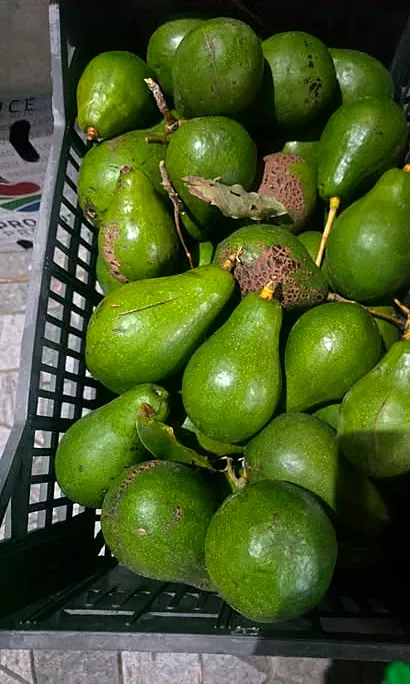
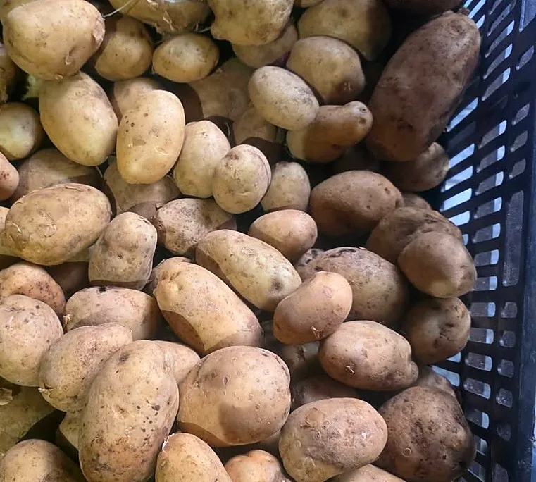
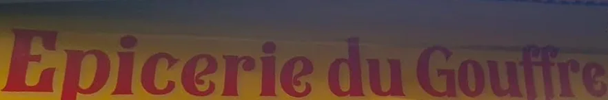

Épicerie de proximité · Terre-Sainte, Saint-Pierre
Épicerie du Gouffre
Toultan là pou zot !Votre quotidien à deux pas : épicerie, alimentation générale, boulangerie, snack, bar et bazar, juste à côté du point de vue du Gouffre.
Ouvert dès 6h, 7 jours sur 7
La boutik du quartier
Chez Mardé, au bout du chemin du Gouffre
Au 27 chemin du Gouffre, à Terre-Sainte, l'épicerie accueille tout le quartier depuis le petit matin : une boisson fraîche, une envie de grignoter, un petit oubli de dernière minute… ou tout simplement l'envie de passer dire bonjour.
« L'épicerie du gouffre, plus connue sous le nom de Chez Mardé […] permet aux habitants de partager un moment ensemble, tout en faisant ses petites courses. »
La Réunion La 1ère, « Les boutik lontan, ces commerces qui résistent au temps »Ici, on vous accueille toujours avec le sourire et la bonne humeur. Mi attend à zot !

Tout sous un même toit
Six univers, une seule adresse
« Bienvenue à toutes et à tous » : c'est ainsi que l'Épicerie du Gouffre se présente, avec tout ce qu'il faut pour la journée.
Épicerie
Les essentiels du quotidien, à deux pas de chez vous.
Alimentation générale
Fruits et légumes frais, arrivages réguliers.
Boulangerie
Le pain frais, dès l'ouverture.
Snack
Une petite faim ? De quoi grignoter à toute heure.
Bar
Une boisson bien fraîche, entre voisins.
Bazar
Parapluies, balais, savates, petits accessoires maison.
Arrivage frais
Qualité péi, kom zot i aim'
Les fruits et légumes de l'épicerie, photographiés dans ses cagettes et partagés sur sa page : « Produits péi, qualité & fraîcheur toultan ! »






Faites glisser pour voir tout l'arrivage
Vu sur la page de l'épicerie
Les nouveautés du moment
Chaque arrivage est annoncé sur Facebook. Quelques-uns de l'été 2026 :
Nouveaux jus Tropi
Mangoustan, Goyave rose, Corossol : « un ti goût péi, frais, léger ». En 330 ml.
Boostez votre énergie
Tropical Vibe & La Patat : Mangue, Pomme, Original, Pink Paradise.
Savates La Réunion
Nouveaux modèles style plage & palmier, pour toute la famille, du 30 au 45.
Le bazar maison
Parapluies fantaisie & UV, balais arc-en-ciel, serpillières, rallonges électriques.
Manucure
Faux ongles tendance, strass & stickers, kits de manucure : sublimez vos mains en un clin d'œil.
Papier cuisson qualité pro
Idéal pour les gâteaux, les samoussas et les gratins.
Les arrivages et les nouveautés sont annoncés au fil de l'eau sur la page Facebook de l'épicerie.
L'esprit de l'épicerie de quartier
Une boutik au cœur du quartier
Derrière le comptoir, il y a des voisins : l'épicerie ouvre volontiers sa porte aux belles initiatives du quartier.
Offerts aux petites et petits clients : « des sourires, de la bonne humeur et un peu de magie ».
Le 11 juillet 2026, l'Association Karaté Goju Ryu Réunion s'est installée à l'épicerie pour financer le stage de ses jeunes karatékas.
En octobre 2026, l'épicerie a relayé une collecte de l'association Nout L.E.A pour une famille du voisinage.
« Faisons vivre nos commerces de proximité ! »
Comment nous trouver ?
Direction le point de vue du Gouffre
- Entre l'Hôpital de Terre-Sainte et la Pharmacie Ylang Ylang.
- Descendez en face de la Pharmacie.
- Continuez jusqu'au point de vue du Gouffre.
- L'épicerie se trouve juste à côté !
| Lundi | 6h – 20h |
| Mardi | 6h – 20h |
| Mercredi | 6h – 20h |
| Jeudi | 6h – 20h |
| Vendredi | 6h – 20h |
| Samedi | 6h – 20h |
| Dimanche | 6h – 19h |
Noël au Gouffre
Vos fêtes, à deux pas de chez vous
L'an dernier, l'épicerie offrait des bonnets de Noël à ses petits clients. Cette année encore, elle vous accompagne pour préparer les fêtes en douceur.
Les courses du réveillon
Fruits et légumes frais, boissons, pain : tout ce qu'il faut pour la tablée, tout près de chez vous.
Un panier péi à offrir
Une idée cadeau à composer avec l'épicerie, aux couleurs de La Réunion.
Des savates sous le sapin
Les savates La Réunion, du 30 au 45 : le petit cadeau qui fait plaisir.
Passez nous voir
Mi attend à zot !
Adresse · 27 chemin du Gouffre, Terre-Sainte, 97410 Saint-Pierre
Téléphone · 0692 77 30 62 · 0692 14 70 67
Horaires · tous les jours dès 6h, jusqu'à 20h (19h le dimanche)

L'enseigne jaune et rouge, à repérer au bout du chemin